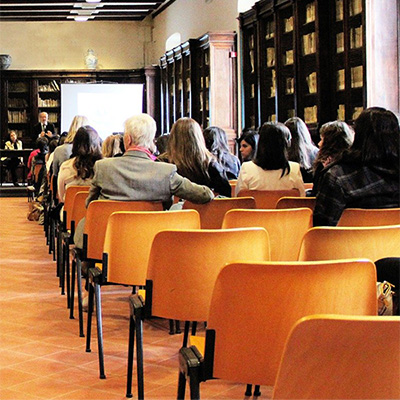

home>
세스코쇼핑>
세스케어란?
세스케어란?
cesco carecesco care
환경위생을 생각하는지난 41여 년 간 해충방제 서비스를 통해 축적된 세스코만의 최적의 환경위생용품 솔루션으로서, 다양한 주방시설의 환경 문제에 대한 최적의 해결을 위해 가장 안전하고 효과적인 케미컬 솔루션 (세정제 · 살균제)과 클리닝 솔루션 (기름때 제거 및 이물질 · 오염 제거 도구)을 제안해 드리는 맞춤형 환경위생용품 솔루션 입니다.
세스코 환경 위생 솔루션▼
- 업종별 · 환경별 발생되는 다양한 위생문제에 대한 최적의 솔루션 제공
- 2,193가지 해충 맞춤 방제 솔루션, 3,127가지 식품안전 솔루션의 고객별 맞춤형 환경위생 솔루션 보유
통합 모니터링 시스템▼
- 세스코의 대표적인 솔루션인 해충 방제 솔루션 및 토탈 식품안전 솔루션, 항균안전 솔루션에 이르는 광범위한 통합 모니터링 시스템
환경위생 컨설팅▼
- 세스코 환경위생 전문가의 통합 모니터링 시스템 기반의 체계적이고 표준화된 체크리스트를 통해 고객의 환경위생 문제 진단
- 환경위생 전문가의 진단 소견과 고객상담을 통한 최적의 솔루션 도출
고객 맞춤 솔루션▼

- 다양한 제품과 솔루션을 통해 고객별 맞춤 솔루션을 제공
- 케미컬과 클리닝 도구의 제안을 넘어 메뉴얼과 현장 교육 프로그램 제공